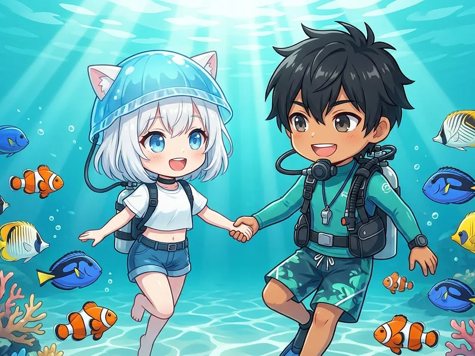

Plans

ダイブ数:
2ビーチダイブ
含まれるもの:
ガイド・タンク・ウエイト・施設使用料・保険
別途必要:
レンタル器材代
追加:
追加1ビーチダイビング ¥6,600
予約する
ダイブ数:
2ボートダイブ
含まれるもの:
ガイド・タンク・ウエイト・乗船料・施設使用料・保険
別途必要:
レンタル器材代
追加:
追加1ビーチダイビング ¥6,600
追加1ボートダイビング ¥8,800
予約する
ダイブ数:
基本スキルの復習 + 1ダイブ
含まれるもの:
ガイド・タンク・ウエイト・施設使用料・保険
おすすめ:
半年以上ブランクのある方
追加:
追加1ビーチダイビング ¥6,600
予約する
ファンダイビングのコースと料金
目的に合わせて3つのコースからお選びください。

🏖️ ビーチダイビング
¥13,200（税込）
穏やかな三浦のビーチでの2ダイブ。エントリーしやすく初ファンダイビングにもおすすめ。
🚤 ボートダイビング
¥19,800（税込）
ボートでしか行けないダイナミックなポイントへ。2ボートダイブで三浦の海を満喫。
追加1ボートダイビング ¥8,800
🔄 リフレッシュダイビング
¥19,800（税込）
久しぶりの方にぴったり！器材の使い方や基本スキルを丁寧に復習してから1ダイブ。
Points
ダイビングポイントのご案内
🏖️
ビーチポイント
城ヶ島をメインにご案内します。海況によって他ポイントに変更する可能性があります。
🚤
ボートポイント
宮川湾または城ヶ島がメインです。海況によって他ポイントに変更する可能性があります。

Rental
レンタル器材のご案内
手ぶらでOK！フルセットレンタルもご用意しています。
Info
当日の持ち物・流れ
🩱
水着
ウエットスーツの下に着用
🧴
タオル
ダイビング後に使用
📋
Cカード
ダイビングライセンス
📓
ログブック
ダイブ記録に
FAQ
ファンダイビングのよくある質問
ブランクがあっても大丈夫ですか？
もちろんです。リフレッシュコースでは、器材の使い方や基本スキルを確認してから潜ります。ブランクの期間や不安なことを事前にお知らせください。
1人でも参加できますか？
はい、お一人でのご参加大歓迎です。少人数制なので他の参加者ともすぐに仲良くなれます。
自分の器材を持ち込んでもいいですか？
もちろんOKです！自器材の方はレンタル代がかかりません。タンク・ウエイトはこちらでご用意します。
神奈川・三浦半島でファンダイビングを楽しむ
三浦 海の学校のファンダイビングは、Cカード（ダイビングライセンス）をお持ちの方向けのスクーバダイビングサービスです。神奈川県三浦市・三浦半島の多彩なダイビングポイントで、ビーチダイビング・ボートダイビングをお楽しみいただけます。横須賀エリアからもアクセス良好で、久里浜駅から電車で約11分です。
半年以上のブランクがある方には、リフレッシュダイビングコースがおすすめです。器材の使い方や基本スキルを確認し、その日の海況と経験に合わせて進めます。少人数制で、一人ひとりのペースに合わせたダイビングをサポートします。